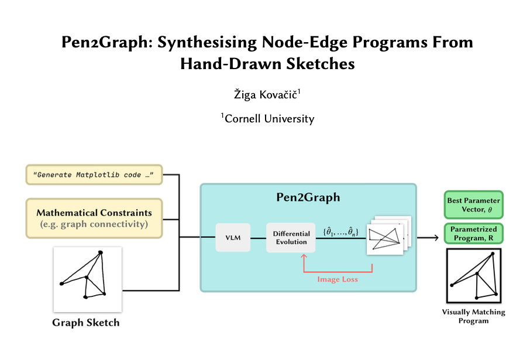
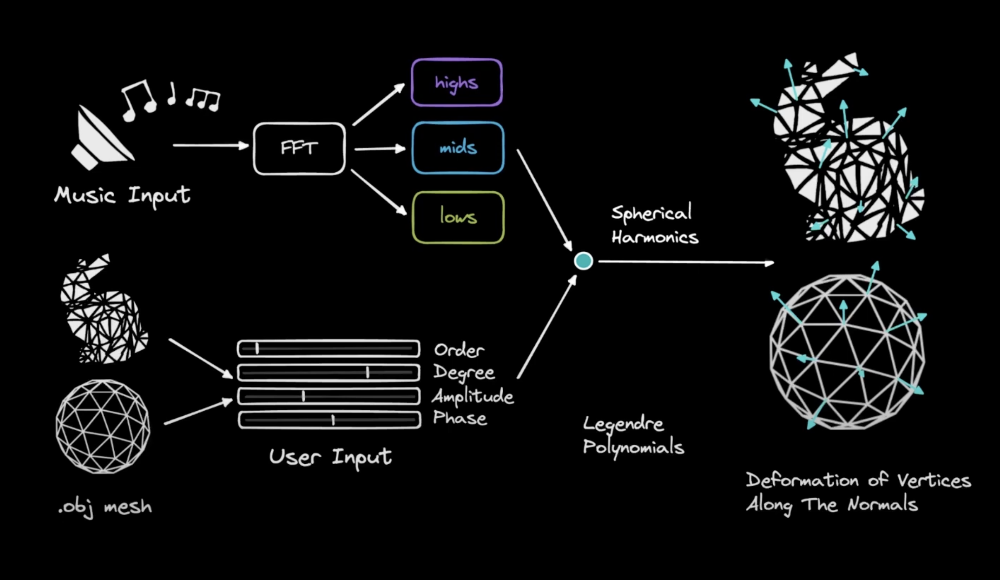

About Me
I am a junior studying Mathematics, CS, through the College Scholars program at Cornell University, where I’m fortunate to be advised by Abe Davis,. I'm doing research at the intersection of graphics and machine learning. I'm also a co-president of Cornell University Artificial Intelligence (CUAI).
Research. I'm broadly interested in the intersection of computer graphics, physics, machine learning, and cognition. Currently I'm focusing on physically plausible re-simulations, i.e. finding useful representations as well as analysis methods that can extract from data not only object's shape but also their physical properties and dynamics.
I've recenly started writing summaries of my readings on physical simulation here.
Publications
* indicates equal contributions. See my Google Scholar page for an up-to-date list.
Projects
Here are some of my research and engineering projects, or at least the ones that are not being prepped for publications...
Image space Modal Basis in JS and Python
This project implements the 2015 paper "Image-Space Modal Bases for Plausible Manipulation of Objects in Video" by Davis et al., which extracts object vibration modes from video to simulate physically plausible deformations. I developed the modal analysis pipeline in Python and built a custom rasterizer in JavaScript for real-time rendering, extending the original work with modal warping.
Obstruction Removal - SliceSplatting
This project modifies Gaussian Splatting to remove obstructions blocking the view of objects of interest in a 3D scene reconstruction.

Pen-2-Graph
This project automates the generation of visually matching node-edge graph programs from hand-drawn sketches by leveraging vision-language models and differential evolution, combining visual input with mathematical constraints to guide program search. CS 6172 Final project
Gaussian Splatting Format Converter
If you are trying to use .ply based viewers, but you're using a fork of Inria's implementation of 3DGS, I made a little script that converts the params.npz into a viewable .ply.

MelodyMesh
3D music visualizer that deforms a mesh based on dominant frequencies in a sound recording. CS 6682 Final project
Teaching Experiences
2025: Head TA for CS 4782: Deep Learning | Spring
2025
2024: TA for CS 4620: Introduction to Computer
Graphics | Fall 2024
2024: TA for CS 4780: Introduction to Machine
Learning | Spring 2024 (Teaching Excellence
Award)
2023: TA for CS 2110: Object-Oriented Programming and
Data Structures | Spring 2023
Personal
In my free time I enjoy cooking, playing the guitar, and going to the gym.
Friends' Personal Websites
Personal websites of some friends/acquaintances you might find interesting:
echen01.github.io | jasonklein.dev | trannhan.com | jren03.github.io | shamus.li | atikshb.github.io | jeremykubenjet.com | www.jonochen.net | kabirsamsi.com